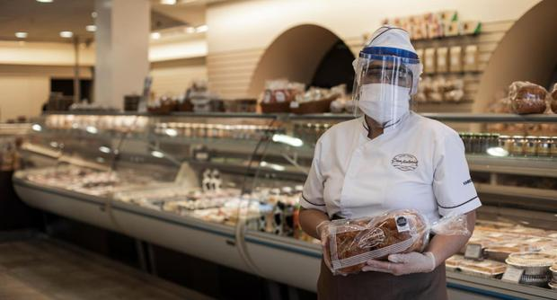

Nuestra Historia
Un amanecer en Huancayo
En octubre del 2000, en la Incontrastable Ciudad de Huancayo, Don Lucho y Doña Flor, una pareja de esposos, junto a un equipo de maestros artesanos peruanos abrieron las puertas de la Pastelería D'Flor, con el nombre en honor a la esposa.
Con dedicación, creatividad y don de servicio fundaron las bases, vivieron su sueño y crearon la visión que hoy mantenemos y por la que trabajamos con gran entusiasmo.
Nuestro compromiso es ofrecer productos de la mejor calidad así como una atención cálida y esmerada.
Agradecemos la dedicación de nuestros compañeros de faena, el apoyo de nuestros generosos proveedores y la incondicional preferencia y cariño de nuestros fieles clientes.
La familia de Pastelerías D'Flor La Tradición de Ayer, la Tecnología de Hoy y la Calidad de Siempre
